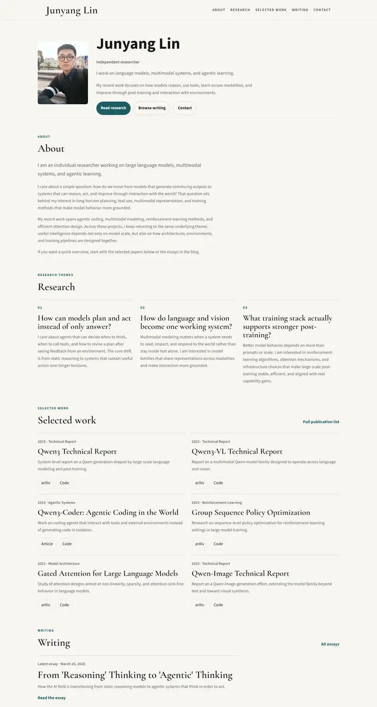
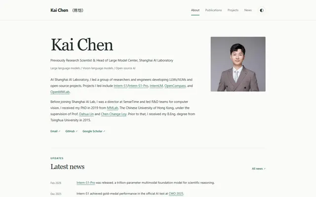

Junyang Lin
A quiet researcher's folio on warm paper: Garamond headings, teal small labels and hairline-ruled entries.

Checked against the rendered page. The eyebrows are tracked uppercase, not true small caps; the hero name renders in Source Sans 3 bold because .hero__name is not in the serif rule.
Why it is here
Editorial serif on a warm off-white ground with small-caps eyebrows, numbered research themes and a two-column selected-work grid. The hierarchy and measure are excellent.
Overview
Color Palette
Typography
Cormorant Garamond
Junyang Lin, large language models
Abstract · Method · Results · BibTeX — 0123456789
Source Sans 3
Junyang Lin, large language models
Abstract · Method · Results · BibTeX — 0123456789
Spacing & Shape
Page Modules
Guidelines
More like this

Amir Bar
A clean faculty prospectus in Imperial blue: Inter on white, pill links, and paper cards that lift a few pixels when you reach for them.

Christoph Feichtenhofer
A conference-hall banner in Facebook blue, then a long ledger of papers in red ink, green venues and justified grey abstracts.

David Novotny
A harbour at dusk beside a quiet reading room: a fixed teal-to-midnight panel with right-aligned contact lines, and soft grey text with tangerine links on white.

Jaeyeon Kim
A quiet seminar handout in light Roboto, where one red-highlighted question and a row of mint tags are the only raised voices.

Jonathan Shafer
A keynote opening slide: one full-bleed slate-blue field, a ringed portrait, a 108px name and a centred paragraph you read from across the room.

Kai Chen
A quiet gallery wall in pale celadon: one big Georgia name, small green eyebrows, and paper thumbnails hung at even intervals.